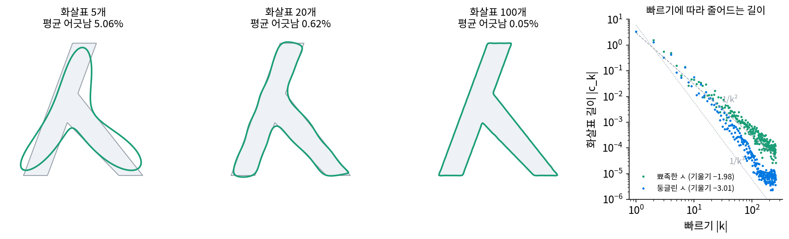
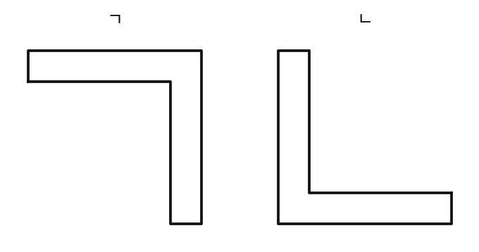

화살표가 몇 개면 충분한가: 계수의 감쇠
점 8개 네모는 화살표 둘이면 8점을 모두 지났지만, 펜으로 그린 글자의 윤곽에는 점이 수천 개이고 화살표도 그만큼 많다. 위젯에서 화살표 수를 줄여 보면, 둥근 곳은 금방 비슷해지는데 뾰족한 모서리는 끝까지 뭉툭하게 남는다. 글자 하나를 알아볼 만큼 그리려면 화살표가 몇 개 있어야 할까, 그리고 그 개수를 그려 보기 전에 미리 알 수 있을까?
역사: 손글씨 윤곽을 숫자 몇 개로
1970년대 초, 손으로 쓴 글자를 기계가 읽게 하려던 연구자들에게는 윤곽 하나에서 숫자 몇 개만 뽑아 글자를 가를 방법이 필요했다. 그란룬드(Gösta H. Granlund)는 1972년 「손으로 쓴 글자 인식을 위한 푸리에 전처리」에서 윤곽을 따라 움직이는 점의 자리를 x + iy로 적고, 둘레 길이를 시간으로 삼아 복소 푸리에 급수의 계수를 글자의 특징으로 썼다. 같은 해 잔(Charles T. Zahn)과 로스키스(Ralph Z. Roskies)는 「닫힌 평면 곡선의 푸리에 기술자」에서 다른 길을 택해, 자리 대신 윤곽이 꺾이는 각도를 둘레 길이에 따라 적고 그것을 급수로 펼쳤다. 이렇게 모양을 푸리에 계수로 적은 것을 「푸리에 기술자(Fourier descriptor)」라 부른다.
두 방법의 차이는 주파수가 커질 때 계수가 얼마나 빨리 줄어드느냐에서 드러났다. 1977년 퍼순(Eric Persoon)과 푸(King-Sun Fu)는 두 기술자를 견주며, 꺾인 각도는 다각형의 모서리마다 값이 뚝 끊기므로 계수가 느리게 줄고, 자리 x + iy는 끊긴 데가 없으므로 계수가 빨리 준다고 적었다. 같은 윤곽이라도 무엇을 급수로 펼치느냐에 따라 필요한 숫자의 개수가 달라진다는 것이다.
ㅅ 윤곽을 화살표 5개, 20개, 100개로
한글 「ㅅ」을 꼭짓점 8개짜리 윤곽으로 직접 만들어 보자. 왼쪽 획은 위에서 왼쪽 아래로 내려오고, 오른쪽 획은 왼쪽 획의 가운데에서 갈라져 오른쪽 아래로 내려간다. 글자 높이는 10이다. 펜이 윤곽을 일정한 속도로 지난다고 보고, 둘레 37.84를 같은 간격으로 나눠 점 1024개를 뽑았다. 점이 1024개이니 도는 화살표도 1023개가 나온다(돌지 않는 c₀ 하나는 글자의 무게중심 (4.61, 3.92)이다). 긴 화살표부터 K개만 남겨 다시 그리면 아래와 같다.
| 남긴 화살표 K | 평균 오차 (원래 윤곽까지의 거리, 글자 높이 대비) | 가장 큰 오차 | 길이 제곱의 합으로 담은 비율 |
|---|---|---|---|
| 1 | 17.92% | 34.80% | 76.1% |
| 5 | 5.06% | 10.64% | 98.0% |
| 20 | 0.62% | 2.90% | 99.96% |
| 100 | 0.05% | 0.59% | 100.00% |
가장 긴 화살표는 주파수 1, 길이 3.43으로 글자를 크게 한 바퀴 돈다. 다음은 주파수 −2(길이 1.56), 2(0.62), 3(0.57), 4(0.50) 순이다. 화살표 5개면 길이 제곱의 합으로는 98%를 담았는데도 그림은 두 다리가 붙은 덩어리다. 20개면 ㅅ으로 읽히고, 100개면 모서리 끝까지 맞는다. 점 1024개를 적으려면 숫자 2048개가 들지만, 화살표 20개와 c₀는 복소수 21개, 숫자 42개다.

몇 개가 필요한지를 정하는 것은 화살표 길이가 주파수에 따라 얼마나 빨리 줄어드느냐다. 그림 맨 오른쪽의 로그 눈금 그래프의 기울기로 보면 뾰족한 ㅅ의 화살표 길이는 −1.98, 거의 1/k²으로 준다. 같은 ㅅ의 모서리를 깎아 둥글린 윤곽은 그래프의 기울기가 −3.01, 1/k³으로 준다. |k| = 100에서 뾰족한 ㅅ의 화살표는 0.00043, 둥글린 ㅅ은 0.00006으로 일곱 배 짧다.
왜 그런지는 곡선을 시간으로 미분해 보면 보인다. 도는 화살표 하나를 시각으로 미분하면 주파수 k가 ik 꼴로 앞으로 나온다.
펜의 속도를 급수로 적으면 화살표마다 길이가 |k|배가 되는 것인데, 뾰족한 ㅅ의 펜은 모서리에서 속도의 방향이 한순간에 바뀐다. 끊긴 데가 있는 함수(네모 물결처럼)의 화살표는 1/k로 줄므로, 속도의 화살표가 1/k이고 자리의 화살표는 그것을 k로 한 번 더 나눈 1/k²이다. 모서리를 둥글리면 속도는 이어지고 그다음 단계(가속도)에서 끊기므로 한 번 더 나뉘어 1/k³이 된다. 미분 식 옆에 적은 지수 p + 1 의 p가 뾰족한 ㅅ은 1, 둥글린 ㅅ은 2인 것이고, 곡선이 한 단계 더 매끄러울 때마다 화살표 길이의 분모에 k가 하나씩 더 붙는다. 이렇게 화살표 길이가 주파수에 따라 줄어드는 모양을 계수의 감쇠 (주파수 |k|가 커질 때 화살표 길이가 1/|k|p+1처럼 줄어드는 것 / decay of Fourier coefficients)라 한다. 그리기 전에 「모서리가 있나, 끊긴 데가 있나」만 보면 대략 몇 개가 필요한지 짐작할 수 있다.
ML에서: 화살표 길이로 글자를 가리는 특징
그란룬드가 화살표를 글자의 특징으로 쓸 때 먼저 부딪힌 일은 같은 글자가 크게, 비스듬히, 다른 곳에서 시작해 쓰인다는 것이다. 화살표의 말로는 셋 모두 간단해서, 글자 전체를 평행하게 옮기면 c₀만 바뀐다. 각도 α(알파)만큼 돌리면 모든 화살표에 eiα가 곱해지고, s배 키우면 모두 s배가 되고, 출발점을 시간 τ(타우)만큼 옮기면 화살표마다 eikτ가 곱해진다. 그래서 c₀를 버리고 길이의 비 |cₖ|/|c₁|만 남기면 옮기기, 돌리기, 키우기, 출발점 어느 것에도 변하지 않는 숫자 묶음이 된다. ㅅ을 30° 돌리고 두 배로 키우고 출발점을 137칸 옮기고 (5, −3)만큼 옮겨도, 주파수 −3, −2, −1, 2, 3, 4인 화살표의 길이 비 [0.060, 0.455, 0.119, 0.182, 0.165, 0.145]는 소수 열여섯째 자리까지 같다. 이런 숫자 묶음을 분류기에 넣으면 같은 글자를 같은 특징으로 받는다. 무엇을 버리고 무엇을 남기느냐가 분류기의 판단을 정한다는 것은 아래 문제 12에서 본다.
문제 10. 가계부를 큰 항목부터
한 달 지출(만 원)이 월세 45, 식비 30, 교통 10, 통신 6, 구독 4, 카페 3, 기타 2 로 합이 100이다. (가) 큰 항목부터 몇 개를 적어야 지출의 90%를 넘는가? (나) 같은 숫자가 화살표 일곱 개의 길이라면, 「길이 제곱의 합」으로 90%를 넘기려면 몇 개가 필요한가? (다) 화살표에서는 왜 길이가 아니라 길이의 제곱을 더하는가?

(가)는 45, 75, 85, 91이니까 네 개요. (나)도 같은 순서니까 네 개겠죠.

제곱을 해서 다시 쌓아 봐요.

2025, 900, 100, 36, …, 합이 3090이에요. 첫째가 65.5%, 둘째까지 94.7%. 두 개면 넘네요. 큰 것이 더 크게 보여요.

제곱하면 큰 값은 더 커지고 작은 값은 더 작아지니까, 전체에서 차지하는 비율이 큰 것 몇 개에 더 몰려.

(다)는요? 화살표 둘을 더한 곡선의 「크기」를 어떻게 재는지 생각해 봐요.
곡선 z(t)의 크기를 |z|²의 평균으로 잰다고 해 볼게요. 화살표가 둘이면 |z|²을 풀었을 때 길이 제곱 둘 말고 두 화살표의 곱이 섞여 나오겠죠.
주파수가 다른 두 화살표의 곱은 한 바퀴 동안 평균이 얼마죠?

돌다가 평균이 0이 돼요. 그래서 길이 제곱이 그대로 더해지는구나. 직교하는 축의 좌표 제곱을 더하는 피타고라스 같은 거예요.

길이를 그냥 더하면 뭐가 틀려?
화살표들이 서로 엇갈려 지우는 것까지 무시하게 돼.

그래서 ㅅ이 화살표 다섯 개로 98%를 담았는데도 덩어리였구나. 남은 2%가 모서리 모양을 들고 있었어요. 가계부도 카페 3만 원이 작아 보여도 그게 제 생활을 보여 주긴 하죠.
문제 11. 일정한 속도로 그린 네모의 화살표
한 변이 2인 네모를 펜이 일정한 속도로 한 바퀴 돈다(점을 아주 많이 뽑는다). (가) 화살표 길이의 비 |ck|/|c₁| 이 1%를 넘는 화살표(가운데 자리 빼고)는 몇 개인가? 살아남는 주파수와 길이 비의 규칙을 말하라. (나) 모서리를 반지름 0.2, 0.5 로 둥글리면 1%를 넘는 화살표는 몇 개가 되는가?
네모는 모서리가 넷이니까 1/k²으로 준다고 했죠. 1/k² < 0.01이면 k > 10이니까, k = 1부터 10까지 열 개요.
점 8개 네모에서 주파수 1과 −3만 남았잖아. 90° 돌려도 같은 모양이니까 1에서 4의 배수만큼 떨어진 주파수만 남을 거야. 1, −3, 5, −7, 9, −11, ….
길이 비를 계산해 보면요?

−3이 0.1111, 5가 0.0400, −7이 0.0204, 9가 0.0123, −11이 0.0083이에요. 딱 1/k²이네요.
그럼 1%를 넘는 건 몇 개죠?
1%를 넘는 건 1, −3, 5, −7, 9 다섯 개고, 2, 3, 4 같은 건 처음부터 0이었어요. 저는 k를 다 세는 실수를 했네요.
(나)는 반지름 0.2면 −3이 0.094, 5가 0.043, 9가 0.013, −7이 0.013이라 아직 다섯 개고, 반지름 0.5면 0.061, 0.036 다음이 0.004라 세 개야.

모서리를 조금 둥글리면 큰 화살표는 그대로이고 빠른 화살표가 먼저 짧아져요. 둥글린 반지름이 커져야 1%라는 문턱 아래로 내려오죠. 1/k²에서 1/k³으로 바뀌는 효과는 빠른 화살표 쪽에서 크게 나요.

미분 가능한 횟수가 많을수록 테일러 급수가 잘 맞는다고 배울 때 비슷한 얘기를 들었어. 여기서는 그게 화살표 개수로 나오네.
문제 12. ㄱ 과 ㄴ 을 가를 수 있는가
글자 윤곽에서 길이 비 |ck|/|c₁|(k = −3, −2, −1, 2, 3, 4)를 특징으로 뽑아 분류기에 넣는다. 아래 그림의 ㄱ 과 ㄴ 은 굵기가 같은 꺾인 획이다. (가) 두 글자의 특징은 얼마나 다른가? (나) 분류기가 둘을 가를 수 있는가? 가르려면 특징을 어떻게 바꿔야 하는가?

ㄱ은 획이 위와 오른쪽에 있고 ㄴ은 왼쪽과 아래에 있으니까 특징도 다르겠죠. 계산해 볼게요. ㄱ이 [0.022, 0.361, 0.564, 0.361, 0.152, 0.028]이고 ㄴ이… 똑같아요?
ㄴ을 ㄱ에서 만드는 방법을 생각해 봐요.

ㄱ을 가운데 둘레로 180° 돌리면 ㄴ이에요.
돌리면 화살표마다 무엇이 곱해지죠?
eiπ = −1이요. 곱해질 뿐이니까 길이는 하나도 안 바뀌어요. 실제로 ㄴ의 c₁은 ㄱ의 c₁에 −1을 곱한 값이고, c₂도 그래요.

돌려도 같은 특징이 나오게 일부러 만든 건데, 그것 때문에 ㄱ이랑 ㄴ을 못 가르네요.
그럼 어떻게 하면 될까요? 돌리기에 변하지 않는 성질 자체가 문제라면요.
글자는 늘 바로 세워 쓰잖아요. 그러면 돌리기를 굳이 지우지 않아도 될 것 같아요.
어떻게? 길이 비는 방향을 다 버리잖아.
길이 비 대신 c₁의 방향을 기준 축으로 남기거나, 화살표를 복소수 그대로 쓰면 돼. ㄱ의 c₁은 −3.212 + 1.766i, ㄴ은 3.212 − 1.766i라 부호가 반대라서 바로 갈려.
그러면 돌리기에 변하지 않게 만드는 건 언제 좋고 언제 손해일까요?
데이터에 그 대칭이 있을 때만 좋네요. 무엇에 변하지 않게 할지는 데이터에 무슨 대칭이 있는지 보고 골라야 해요.

숫자 6과 9도 이 방법으로는 못 가르겠어요. 사진을 아무렇게나 돌려 데이터를 늘리는 증강을 숫자 데이터에 쓰면 안 된다는 말이 이거였구나.